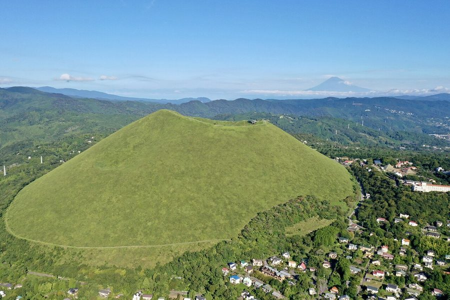
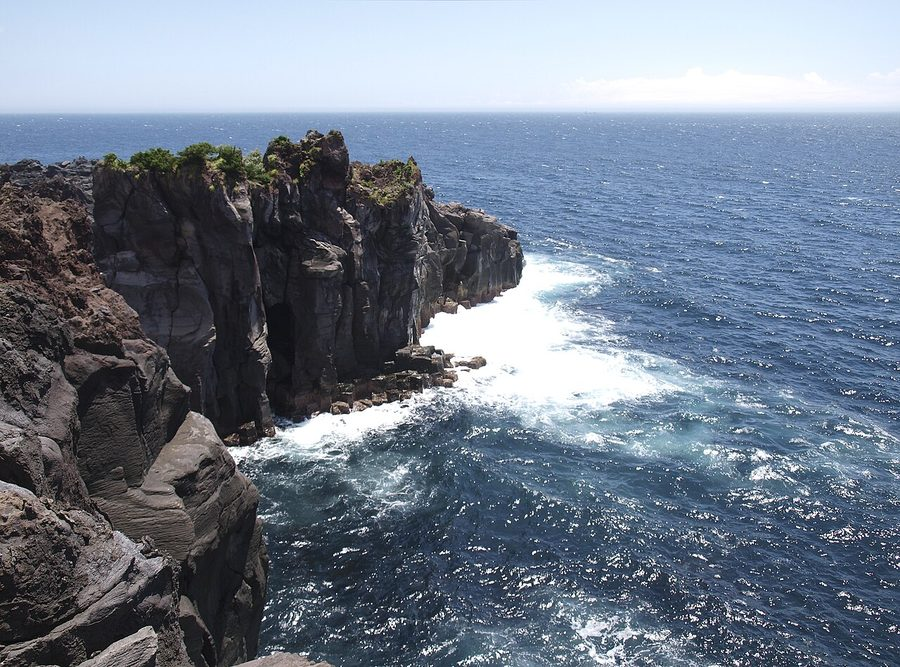
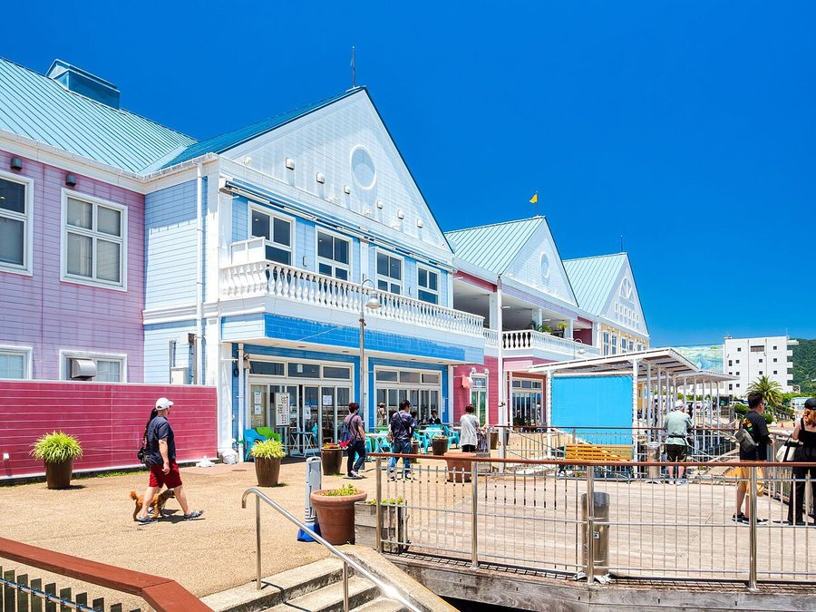
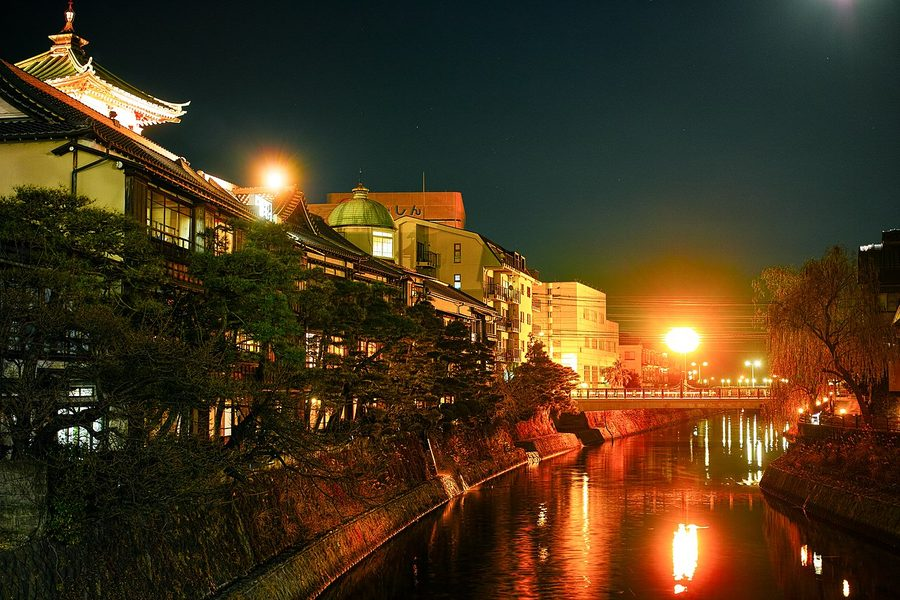

静岡県伊東市の日帰り温泉・銭湯・サウナ（48件）
寄り道スポット検索アプリ「ヨッテコ」の収録データから、静岡県伊東市の日帰り温泉・銭湯・サウナを営業時間・料金つきで一覧にしました（2026年8月時点）。
最も安いのは伊東温泉 ホテルよしの（150円）。最も遅くまで入れるのは立ち寄り温泉 伊豆高原のゆ（24:00まで）。朝風呂なら伊東マリンタウン 朝日の湯 シーサイドスパ（5:00開店）。
静岡県伊東市はどんなまち？
数字で見る🔍静岡県伊東市
まちの横顔




- 地形と自然: 伊東市は静岡県の最東部、伊豆半島の東岸中部に位置する市です。市域は宇佐美火山東部斜面と丘陵性山地、天城火山東北部、大室山と先原溶岩台地、伊豆高原などのエリアからなります。伊東のシンボルとされる火山・大室山や、溶岩流と海食崖でできた城ヶ崎海岸、伊豆東部火山群の火口湖である一碧湖など、火山活動によって生まれた地形が随所に見られます。
- 観光: 市中部は戦後に別荘地として開発され、観光施設が集まるようになりました。大室山の麓に広がる伊豆高原地域は、伊豆半島東部でも有数の観光地として知られています。断崖が続く城ヶ崎海岸には灯台や吊橋を巡る遊歩道があり、富戸港発着の遊覧船でホエールウォッチングやバードウォッチングを楽しむツアーもあります。
寄り道充実度（全国偏差値）
偏差値・順位は、ヨッテコ収録データ（2026年8月時点・26,033件）を市区町村別に集計した施設数の全国分布（1,728市区町村）から毎回算出しています。カードを押すとカテゴリ別の分析に切り替わります。
日帰り温泉から見た静岡県伊東市
市内の日帰り温泉は48件、全国25位（上位1.4%）。——寄り道できる湯の数は、全国でも上位クラス。
- 54%の店に露天風呂があります。全国水準は46%です。大室山や城ヶ崎海岸など、火山活動でできた地形を持つ市。屋根のない湯船が当たり前、という土地柄なのでしょうか。
- 98%の店が天然温泉です。全国水準は67%です。伊豆高原や城ヶ崎海岸など、伊豆半島東部有数の観光地を抱える市。沸かし湯ではなく源泉が前提で、温泉そのものがまちの資源になっています。
- 33%——サウナの併設率は、全国の52%に届きません。主役はあくまで湯船、という構成でしょうか。
- 21時を過ぎて入れる店は33%。全国水準（40%）より少なめです。夜の選択肢は限られるので、閉店時刻は先に見ておきたいところです。
- 入浴料の中央値は1,000円でした（判明35件）。全国の650円と比べて54%高い水準です。旅先で入る湯としての価格帯です。
出典: 施設データ=ヨッテコ収録データ（26,033件・2026年8月時点）。偏差値・全国順位・全国水準は全1,728市区町村の分布から毎回算出。 / 人口=総務省「住民基本台帳に基づく人口、人口動態及び世帯数」（2026年1月1日現在） / 面積=国土地理院「全国都道府県市区町村別面積調」（2026年4月1日時点） / 森林率=農林水産省「2025年農林業センサス（農山村地域調査）」市区町村別林野率（2025年、林野率（林野面積÷総土地面積）） / 年平均気温=気象庁「平年値（1991-2020年）」。市区町村の代表点（国土交通省「大字・町丁目レベル位置参照情報」）から最も近い観測点の値 / まちの解説=日本語版Wikipedia「伊東市」（https://ja.wikipedia.org/wiki/伊東市、2026年8月21日取得）より作成（CC BY-SA 4.0） / 写真=Wikimedia Commons（各キャプションに作者・ライセンスを記載）
曜日別の営業施設数
| 月 | 火 | 水 | 木 | 金 | 土 | 日 |
|---|---|---|---|---|---|---|
| 45 | 44 | 41 | 44 | 46 | 46 | 46 |
水曜日が最も休みが多く（各6件が定休）、年中無休は37件です。※営業時間データのある47件で集計
入浴料金の分布（大人）
| 500円以下 | 11件 | |
| 501〜800円 | 4件 | |
| 801〜1,200円 | 6件 | |
| 1,201円以上 | 14件 |
料金が確認できた35件で集計。
施設一覧
| 施設 | 営業時間 | 料金（大人） |
|---|---|---|
| お風呂ずきの宿 大東館 天然温泉露天風呂 伊豆高原の温泉宿。弱アルカリ性単純泉で肌に優しく、6種類の浴場が特徴。日帰り立ち寄り湯も受け入れ。 | 14:00〜22:00 | 800円 |
| オーベルジュ ル・タン 天然温泉 伊豆高原温泉に位置するフレンチレストラン。日帰りランチプランあり。貸切温泉がある。 | 09:00〜18:00 | — |
| ケイズハウス伊東温泉 天然温泉 伊東温泉の国登録有形文化財の100年古木造建築。毎分100リットル超の自家源泉かけ流し。外国人向けホステルとして営業、テ… | 08:00〜20:00 | 3,950円 |
| ニッポニア高原荘 夢海月（ゆめみづき） 天然温泉露天風呂サウナ | 10:00〜15:30 | 4,400円 |
| ホテルサンハトヤ 海底温泉 天然温泉露天風呂サウナ 海底1,000mから湧出する海底温泉「お魚風呂」が特徴。隣の大水槽で魚が泳ぐユニークな浴場体験。 | 08:30〜18:00 | 2,000円 |
| ホテル伊東パウエル 天然温泉露天風呂サウナ 伊東を代表する高泉質温泉。海辺の露天風呂から水平線の日の出が見える（2月中旬～11月下旬）。源泉は41.9度で、冬季のみ… | 15:00〜20:00 | — |
| ラフォーレ倶楽部 湯の庭 天然温泉露天風呂 | 12:00〜21:00 ※曜日により異なる | 1,000円 |
| リゾートセンター みのり温泉 天然温泉サウナ | 11:00〜19:00（水・木休） | 700円 |
| リブマックスリゾート 伊東川奈 天然温泉露天風呂 伊東温泉の海辺リゾート。カルシウム・ナトリウム・塩化物・硫酸塩泉で複数の浴場。日帰り入浴は午前・午後の時間区分で対応。 | 09:00〜17:00 | 1,400円 |
| リブマックスリゾート 城ヶ崎海岸 天然温泉露天風呂 対島温泉（対島22号源泉）の城ヶ崎海岸リゾート。午前・午後の時間区分で日帰り入浴に対応。 | 09:00〜17:00 | 1,400円 |
| 伊東ホテルジュラク 天然温泉露天風呂サウナ 7つの自家源泉を保有し、全客室に天然温泉給湯を実現している珍しいホテル。「美人の湯」として知られるpH8.34の弱アルカ… | 17:00〜20:00 | — |
| 伊東マリンタウン 朝日の湯 シーサイドスパ 天然温泉露天風呂サウナ 伊東マリンタウン内の日帰り温泉。回数券やレンタル品あり。 | 05:00〜21:00 | 1,000円 |
| 伊東宇佐美温泉 民宿ふかべ 天然温泉露天風呂 | 15:00〜20:00 | 600円 |
| 伊東小涌園 天然温泉露天風呂 自家源泉を持つ伊東小涌園の日帰り温泉。pH8.4の弱アルカリ性でツルツルの美肌の湯として知られ、かけ流しで毎日新鮮な湯を… | 14:00〜18:00 | 1,250円 |
| 伊東温泉 ホテルよしの 天然温泉露天風呂 伊東温泉の自家源泉を掛け流しで利用するホテル。露天風呂とたたみ風呂、岩風呂で源泉を堪能できます。 | 15:00〜22:00 | 150円 |
| 伊東温泉 ホテルラヴィエ川良 天然温泉露天風呂サウナ 8本の源泉を保有する伊豆地区でも数少ない温泉リゾート。全客室天然温泉給湯で、相模湾を望む露天風呂が特徴。 | 14:00〜20:00 | 2,750円 |
| 伊東温泉 ホテル暖香園 天然温泉露天風呂 伊東温泉郷で別府・熱海とともに日本三大温泉郷のひとつ。毎分約32,000リットルの豊富な湯量の単純泉は肌に優しく、乳幼児… | 14:00〜20:00（土・日休） | 1,000円 |
| 伊東温泉 山岸園 天然温泉露天風呂サウナ 伊東温泉の高台に位置する眺望自慢の宿。源泉100%の天然温泉かけ流し、大浴場、無料貸切岩風呂を備える。 | 10:00〜15:00 | — |
| 伊東温泉 梅屋旅館 天然温泉 | 10:00〜16:00 | — |
| 伊東温泉 湯あみの宿 かめや楽寛 天然温泉 JR伊東駅から徒歩3分、海沿いに佇む温泉宿。6種類の多彩なお風呂が自慢。夏は目の前のオレンジビーチで海水浴や打ち上げ花火… | 14:00〜17:00 | 1,000円 |
| 伊東温泉 湯川弁天の湯 天然温泉 伊東温泉の『七福神の湯』共同浴場めぐりのひとつ。地元の人にも親しまれる、比較的広々とした造りの共同浴場。 | 14:00〜22:00（水休） | 350円 |
| 伊東温泉 翠方園 天然温泉露天風呂 伊東温泉の24時間営業施設。単純温泉（低張性・弱アルカリ性・高温泉）の貸切露天風呂が特徴。 | 10:00〜18:00 | — |
| 伊東温泉 陽気館 天然温泉露天風呂 高台の展望露天風呂から伊東市街と海を一望できる、源泉かけ流しの自慢の温泉。館内登山電車で傾斜45度の露天風呂へアクセスす… | 11:00〜15:00（火・水休） | 1,100円 |
| 伊豆・伊東 サザンクロスリゾート 天然温泉 | 12:00〜24:00 | — |
| 伊豆高原ホテル五つ星 天然温泉露天風呂サウナ 伊豆高原の自然に囲まれた日帰り温泉施設。天然温泉は肌に優しく、美肌効果が期待できる。 | 15:00〜21:00 | 1,500円 |
| 伊豆高原・城ヶ崎温泉 花吹雪 天然温泉露天風呂 伊豆の森の中に点在する9つの貸切温泉を備えた別荘宿。硫酸塩・塩化物泉を100%源泉掛け流しで利用できます。 | 11:00〜14:00 | — |
| 伊豆高原温泉ホテル 森の泉 天然温泉露天風呂サウナ 6000坪の大自然に囲まれた洋館ホテル。伊豆高原では稀なPH8.3の硫酸塩温泉で、お肌に優しい「美人の湯」。 | 06:00〜10:00 | — |
| 和田湯会館 和田寿老人の湯 天然温泉 伊東温泉の『七福神の湯』（共同浴場めぐり）のひとつ。江戸時代には三代将軍徳川家光にも湯を献上したと伝わる、七福神の湯の中… | 14:00〜22:00（水休） | 400円 |
| 城ヶ崎八幡野海岸 海が庭 みなとや 天然温泉 | — | — |
| 大江戸温泉物語 Premium 伊東ホテルニュー岡部 天然温泉露天風呂サウナ | 07:00〜10:00 ※曜日により異なる | 1,500円 |
| 宇佐見温泉 海ホテル 天然温泉 | 13:00〜17:00 | 1,000円 |
| 小川布袋の湯 天然温泉 深さ78cmの深い浴槽が特徴的。塩化物・硫黄塩泉で、湯上がりつるつる。静かで落ち着いた雰囲気の共同浴場。 | 16:00〜21:00（木休） | 300円 |
| 岡温泉会館 岡布袋の湯 天然温泉 | 14:00〜22:00 | 600円 |
| 恵比寿あらいの湯 天然温泉 伊東温泉七福神の湯の一つ。浴室の真ん中に浴槽がある伝統的な伊東式共同浴場。湯船の底から源泉が投入される豊富で新鮮な源泉か… | 13:00〜22:00 | 350円 |
| 東海館 天然温泉 歴史ある伊東市街地の共同浴場。床から壁まで総タイル張りの大浴場。 | 11:00〜19:00 | 500円 |
| 松原浴場 松原大黒天神の湯 天然温泉 | 15:00〜22:00 | 400円 |
| 横浜藤よし 伊豆店 天然温泉露天風呂 伊豆高原の五つ星源泉宿。相模湾を見降ろす露天風呂が自慢。源泉掛け流し100%で地下1200mから湧き出す。 | 11:00〜21:00 | 1,500円 |
| 水の家 天然温泉サウナ | 09:00〜17:00 | 3,000円 |
| 海洋深層水 赤沢スパ サウナ 赤沢沖深海800mから汲み上げた海洋深層水を使用した高級スパ施設。フランス発祥のタラソテラピー（海洋療法）の理念に基づい… | 10:00〜20:00 | 3,500円 |
| 温泉民宿 鈴幸 天然温泉 | 14:00〜20:00 | — |
| 湯川第一浴場 子持ち湯 天然温泉 源泉かけ流しの温泉で、駅前雑居ビルの地階にある古き良き銭湯。家族風呂あり | 15:00〜21:30（月休） | 350円 |
| 湯川第三浴場 汐留の湯 天然温泉 | 14:00〜22:00 | 350円 |
| 玖須美温泉会館 毘沙門天 芝の湯 天然温泉 | 14:00〜22:00（火休） | 400円 |
| 立ち寄り温泉 伊豆高原のゆ 天然温泉露天風呂サウナ 泥湯が人気の伊豆高原の日帰り温泉。無料泥パック、マンガ本6000冊完備。 | 10:00〜24:00 | 1,300円 |
| 赤沢日帰り温泉館 天然温泉露天風呂サウナ 太平洋一望の絶景露天風呂。大浴場、温暖浴、プレイラウンジ、マッサージ等完備。 | 10:00〜22:00 | 1,400円 |
| 鎌田福禄寿の湯 天然温泉 | 14:00〜22:00（水休） | 300円 |
| 青山やまと 天然温泉露天風呂サウナ 伊東温泉に位置する旅館。日帰り利用可能。食事処ありの施設。 | 09:00〜18:00 | — |
| 音無の森 ホテル緑風園 天然温泉露天風呂 | 13:30〜22:30 | — |